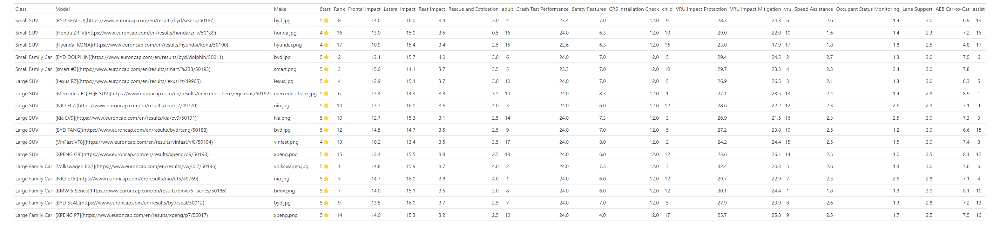
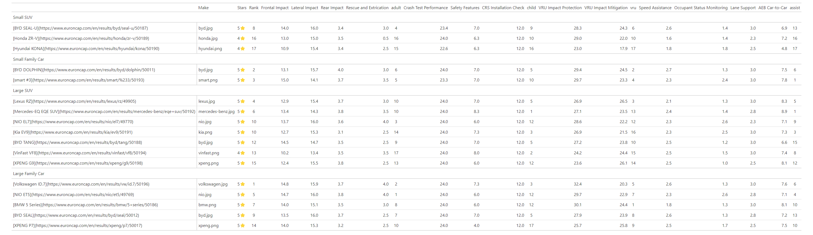

Code
from enum import Enum
from itertools import chain
from pathlib import Path
from typing import Callable, Iterable
import polars as pl
from great_tables import GT, html, loc, style, system_fonts
from polars import selectors as csSubmission for Posit 2024 Table Contest
This project aims to integrate the great-tables 0.7.0 and Polars 0.20.31 packages in Python to create a table displaying the ratings of 17 cars from Euro NCAP for the year 2023. You can find all the code and the tables in this repository.
Hereafter, I’ll use the abbreviation gt to refer to the Python package great-tables and {gt} to refer to the R package gt.
We will divide the content into four parts as follows:
gt.All data, including logos, has been gathered from the EuroNCAP website in JSON format and stored as euroncap_2023.json. Next, we’ll load the data into a Polars DataFrame named df_mini using pl.read_json() and preview the first row along with its column names.
from enum import Enum
from itertools import chain
from pathlib import Path
from typing import Callable, Iterable
import polars as pl
from great_tables import GT, html, loc, style, system_fonts
from polars import selectors as csjson_file = "euroncap_2023.json"
df_mini = pl.read_json(json_file).head(1)
df_mini| Make | Model | Class | Url | Stars | Frontal Impact | Lateral Impact | Rear Impact | Rescue and Extrication | Crash Test Performance | Safety Features | CRS Installation Check | VRU Impact Protection | VRU Impact Mitigation | Speed Assistance | Occupant Status Monitoring | Lane Support | AEB Car-to-Car |
|---|---|---|---|---|---|---|---|---|---|---|---|---|---|---|---|---|---|
| str | str | str | str | str | str | str | str | str | str | str | str | str | str | str | str | str | str |
| "BMW" | "BMW 5 Series" | "Large Family Car" | "https://www.euroncap.com/en/re… | "5" | "14.0" | "15.1" | "3.5" | "3.0" | "24.0" | "6.0" | "12" | "30.1" | "24.4" | "1.8" | "1.3" | "3.0" | "8.1" |
df_mini.columns['Make',
'Model',
'Class',
'Url',
'Stars',
'Frontal Impact',
'Lateral Impact',
'Rear Impact',
'Rescue and Extrication',
'Crash Test Performance',
'Safety Features',
'CRS Installation Check',
'VRU Impact Protection',
'VRU Impact Mitigation',
'Speed Assistance',
'Occupant Status Monitoring',
'Lane Support',
'AEB Car-to-Car']
The first few columns contain basic information such as Make, Model, Class, and the Url from which the data was gathered. Following these, there’s a Stars column indicating the car’s rating, accompanied by thirteen columns detailing testing scores across four categories: Adult Occupant, Child Occupant, Vulnerable Road Users, and Safety Assist. It’s worth noting that there may be some rounding errors, which could lead to discrepancies in the sum of each test within each category, as compared to the numbers outlined on the website.
Subsequently, we’ll define some variables related to the testing categories for later use.
adult_occupant_columns = [
"Frontal Impact",
"Lateral Impact",
"Rear Impact",
"Rescue and Extrication",
]
child_occupant_columns = [
"Crash Test Performance",
"Safety Features",
"CRS Installation Check",
]
vulnerable_road_users_columns = ["VRU Impact Protection", "VRU Impact Mitigation"]
safety_assist_columns = [
"Speed Assistance",
"Occupant Status Monitoring",
"Lane Support",
"AEB Car-to-Car",
]
testing_columns = (
adult_occupant_columns
+ child_occupant_columns
+ vulnerable_road_users_columns
+ safety_assist_columns
)
testing_groups = (
adult_occupant_columns,
child_occupant_columns,
vulnerable_road_users_columns,
safety_assist_columns,
)
testing_group_names = ("adult", "child", "vru", "assist")
testing_columns_with_rank = []
for _grp, _grp_name in zip(testing_groups, testing_group_names):
testing_columns_with_rank.extend(chain(_grp, [_grp_name]))Employing the itertools.chain function facilitates the seamless merging of multiple iterables, treating them as a cohesive whole. From personal experience, leveraging it often streamlines tasks and saves time, particularly when combining various types of iterables.
We’ll apply a technique learned from Matt Harrison, the author of Effective Pandas and Effective Polars, by consolidating all adjustments into a single function called tweak_df. This approach allows us to easily track the modifications made to the raw data at the outset of the Jupyter notebook. First, we’ll move the previous pl.read_json() call into tweak_df() and save it as a temporary variable df. Then, we’ll use Polars expressions to modify or create several columns.
def tweak_df(json_file: str) -> pl.DataFrame:
df = pl.read_json(json_file)
...Make column expressionTo enhance the visual appeal of the Make column, we’ll transform plain strings into images sourced from the URLs provided in the euroncap_2023.json file. These images, stored in the logo folder, are suffixed with either .png or .jpg. The transformation process will be handled by gt later. Our immediate goal is to modify the Make column to lowercase and append the correct suffix to each entry. For instance, the cell value for BMW should be bmw.png since the associated image is a .png file. Similarly, for Lexus, the cell value should be lexus.jpg. This can be achieved using the pl.when().then().otherwise() syntax, which is the Polars equivalent of an if-else conditional branch, allowing us to dynamically select the appropriate suffix.
logo_path = Path("logo")
def tweak_df(json_file: str) -> pl.DataFrame:
...
_make = pl.col("Make").str.to_lowercase()
logo_pngs = [l.stem for l in logo_path.glob("*png")]
make = (
pl.when(_make.is_in(logo_pngs))
.then(_make.add(".png"))
.otherwise(_make.add(".jpg"))
)Model column expressionIn the Model column, we aim to format the entries as hyperlinks that direct users to the URLs containing the rating reports of the respective cars. Again, the formatting task will be delegated to gt. Our objective now is to construct strings in Markdown format. To accomplish this, we’ll create a function called cols_merge_as_str to facilitate the transformation.
def _str_exprize(elem: str | pl.Expr) -> pl.Expr:
if isinstance(elem, pl.Expr):
return elem.cast(pl.Utf8)
return pl.lit(str(elem))
def cols_merge_as_str(*elems: pl.Expr | str, alias: str = "merged_col") -> pl.Expr:
if not elems:
raise ValueError("At least one str or Polars expression must be provided.")
cols = None
for elem in elems:
if cols is None:
cols = _str_exprize(elem)
continue
cols = cols.add(_str_exprize(elem))
return cols.alias(alias)
def tweak_df(json_file: str) -> pl.DataFrame:
...
model = cols_merge_as_str(
"[", pl.col("Model"), "](", pl.col("Url"), ")", alias="Model"
)You may also find the pl.concat_str() function relevant; it’s worth exploring for additional insights. Additionally, the gt documentation provides an example of how to perform a similar operation using pl.map_elements().
Stars column expressionWhile images are visually appealing, sometimes it’s convenient to express certain ideas using emojis. Therefore, for the Stars column, we’ll simply concatenate it with the ⭐ emoji.
def tweak_df(json_file: str) -> pl.DataFrame:
...
stars = pl.col("Stars").add("⭐")Creating temporary columns can often simplify the process of writing downstream Polars expressions. In this case, we’ll use generator expressions to create a generator that calculates the sum for each of the four categories. It’s worth noting that functions like pl.sum_horizontal() are vectorized in Polars, which eliminates the need for slow for-loops when handling operations across different columns.
def tweak_df(json_file: str) -> pl.DataFrame:
...
grps = (
pl.sum_horizontal(grp).alias(grp_name)
for grp, grp_name in zip(testing_groups, testing_group_names)
)SubRanks column expressionWhen computing the ranks for the four SubRank columns, we calculate the rank for each category individually. We use the min method with pl.Expr.rank() to determine the rank. Consequently, there may be occasional gaps in the ranking if multiple entries share the same rank. Since a higher score signifies a better result, we apply descending=True to ensure the correct ranking order.
def tweak_df(json_file: str) -> pl.DataFrame:
...
sub_ranks = (
pl.col(grp_name).rank("min", descending=True).cast(pl.UInt8)
for grp_name in testing_group_names
)Rank column expressionFor the Rank column, we’ll use pl.mean_horizontal() to calculate the average rank across the four categories. We will then rank these averages to determine the final rank using the min method with pl.Expr.rank(). Since a lower average rank is better, we’ll set descending=False.
def tweak_df(json_file: str) -> pl.DataFrame:
...
rank = (
pl.mean_horizontal(testing_group_names)
.rank("min", descending=False)
.cast(pl.UInt8)
.alias("Rank")
)tweak_df() functionNow, it’s time to actually tweak df. The function comprises six chained methods:
.with_columns(pl.col(testing_columns).cast(pl.Float64)): Casting all testing_columns to pl.Float64..with_columns(model, make, stars, *grps): Creating or modifying the corresponding columns..with_columns(sub_ranks): Adding fours SubRank columns..with_columns(rank): Adding a Rank column..sort("Class", "Rank", *testing_group_names, descending=[True, False] + [False] * len(testing_group_names)): Sorting df by the specified columns in different orders..select(chain(("Class", "Model", "Make", "Stars", "Rank"), testing_columns_with_rank)): Rearranging the final desired columns.def tweak_df(json_file: str) -> pl.DataFrame:
...
return (
df.with_columns(pl.col(testing_columns).cast(pl.Float64))
.with_columns(model, make, stars, *grps)
.with_columns(sub_ranks)
.with_columns(rank)
.sort(
"Class",
"Rank",
*testing_group_names,
descending=[True, False] + [False] * len(testing_group_names),
)
.select(
chain(
("Class", "Model", "Make", "Stars", "Rank"), testing_columns_with_rank
)
)
)The code snippet for this section is shown below:
logo_path = Path("logo")
def _str_exprize(elem: str | pl.Expr) -> pl.Expr:
if isinstance(elem, pl.Expr):
return elem.cast(pl.Utf8)
return pl.lit(str(elem))
def cols_merge_as_str(*elems: pl.Expr | str, alias: str = "merged_col") -> pl.Expr:
"""
Parameters
----------
elems
str or Polars expressions.
alias
alias for the final Polars expressions.
Returns:
----------
pl.Expr
Polars expressions
"""
if not elems:
raise ValueError("At least one str or Polars expression must be provided.")
cols = None
for elem in elems:
if cols is None:
cols = _str_exprize(elem)
continue
cols = cols.add(_str_exprize(elem))
return cols.alias(alias)
def tweak_df(json_file: str) -> pl.DataFrame:
df = pl.read_json(json_file)
_make = pl.col("Make").str.to_lowercase()
logo_pngs = [l.stem for l in logo_path.glob("*png")]
make = (
pl.when(_make.is_in(logo_pngs))
.then(_make.add(".png"))
.otherwise(_make.add(".jpg"))
)
model = cols_merge_as_str(
"[", pl.col("Model"), "](", pl.col("Url"), ")", alias="Model"
)
stars = pl.col("Stars").add("⭐")
grps = (
pl.sum_horizontal(grp).alias(grp_name)
for grp, grp_name in zip(testing_groups, testing_group_names)
)
sub_ranks = (
pl.col(grp_name).rank("min", descending=True).cast(pl.UInt8)
for grp_name in testing_group_names
)
rank = (
pl.mean_horizontal(testing_group_names)
.rank("min", descending=False)
.cast(pl.UInt8)
.alias("Rank")
)
return (
df.with_columns(pl.col(testing_columns).cast(pl.Float64))
.with_columns(model, make, stars, *grps)
.with_columns(sub_ranks)
.with_columns(rank)
.sort(
"Class",
"Rank",
*testing_group_names,
descending=[True, False] + [False] * len(testing_group_names),
)
.select(
chain(
("Class", "Model", "Make", "Stars", "Rank"), testing_columns_with_rank
)
)
)
df = tweak_df(json_file)The core concept of utilizing the pipeline is that each callable (typically a function) receives an instance of a GT object as the first input parameter and returns an instance of a GT object. This allows us to chain multiple callables together, forming a pipeline.
In this section, we’ll gradually build each callable and observe how the table is constructed. Instead of rendering the table in HTML directly, we’ll use the make_table() function to generate multiple PNG tables, which internally calls GT.save(). These tables will be shown at the end of each subsection. This approach allows us to save each progress step in the tables folder. However, since the hyperlinks in the table won’t be functional when saved in PNG format, this is a minor drawback I hope you can accept.
def make_table(
gtbl: GT,
*funcs: Callable[[GT], GT] | Iterable[Callable[[GT], GT]],
tbl_dir: str | Path = "tables",
save_png: bool = False,
) -> GT:
first = funcs[0]
if isinstance(first, Iterable) and len(funcs) == 1:
funcs = first
table_dir = Path(tbl_dir)
table_dir.mkdir(exist_ok=True)
for i, func in enumerate(funcs, start=1):
gtbl = func(gtbl)
if save_png:
gtbl.save(str(table_dir / f"{i:02}_{func.__name__}.png"))
return gtblBefore moving on, we need to define the color palette for later use. Next, we’ll set up some boilerplate code for the table labels. Fortunately, gt offers GT.html() and GT.md() utility functions to assist us. The numbers used here can be easily found in the rating report.
class EuroNCAPPalette(str, Enum):
TABLE_BACKGROUND: str = "#F5F5F5"
HIGHLIGHT1: str = "#C0DA80"
HIGHLIGHT2: str = "#C3EBD7"
HIGHLIGHT3: str = "#A0E0D0"
STUB_COLUMN_LABEL: str = "#D4E6A8"
ROW_GROUP: str = "#BFE2A7"
CELL: str = "#F4FAF1"
TITLE: str = "#30937B"
GRADIENT1: str = "#E7CE91"
GRADIENT2: str = "#F2E4C0"
GRADIENT3: str = "#F5EFE7"
domain_nominal_max = {
"Frontal Impact": 16,
"Lateral Impact": 16,
"Rear Impact": 4,
"Rescue and Extrication": 4,
"Crash Test Performance": 24,
"Safety Features": 13,
"CRS Installation Check": 12,
"VRU Impact Protection": 36,
"VRU Impact Mitigation": 27,
"Speed Assistance": 3,
"Occupant Status Monitoring": 3,
"Lane Support": 3,
"AEB Car-to-Car": 9,
}
adult_occupant_top_score = 40
adult_occupant_labels = zip(
adult_occupant_columns,
(
html(
f"Frontal<br>Impact<br><i>({domain_nominal_max['Frontal Impact']}/{adult_occupant_top_score})</i>"
),
html(
f"Lateral<br>Impact<br><i>({domain_nominal_max['Lateral Impact']}/{adult_occupant_top_score})</i>"
),
html(
f"Rear<br>Impact<br><i>({domain_nominal_max['Rear Impact']}/{adult_occupant_top_score})</i>"
),
html(
f"Rescue&<br>Extrication<br><i>({domain_nominal_max['Rescue and Extrication']}/{adult_occupant_top_score})</i>"
),
),
)
child_occupant_top_score = 49
child_occupant_labels = zip(
child_occupant_columns,
(
html(
f"Crash<br>Test<br><i>({domain_nominal_max['Crash Test Performance']}/{child_occupant_top_score})</i>"
),
html(
f"Safety<br>Features<br><i>({domain_nominal_max['Safety Features']}/{child_occupant_top_score})</i>"
),
html(
f"CRS<br>Installation<br>Check<br><i>({domain_nominal_max['CRS Installation Check']}/{child_occupant_top_score})</i>"
),
),
)
vulnerable_road_users_score = 63
vulnerable_road_users_labels = zip(
vulnerable_road_users_columns,
(
# add empty space
html(
f"Impact <br>Protection <br><i>({domain_nominal_max['VRU Impact Protection']}/{vulnerable_road_users_score}) </i>"
),
html(
f"Impact <br>Mitigation <br><i>({domain_nominal_max['VRU Impact Mitigation']}/{vulnerable_road_users_score}) </i>"
),
),
)
safety_assist_score = 18
safety_assist_labels = zip(
safety_assist_columns,
(
html(
f"Speed<br>Assistance<br><i>({domain_nominal_max['Speed Assistance']}/{safety_assist_score})</i>"
),
html(
f"Occupant<br>Status<br>Monitoring<br><i>({domain_nominal_max['Occupant Status Monitoring']}/{safety_assist_score})</i>"
),
html(
f"Lane<br>Support<br><i>({domain_nominal_max['Lane Support']}/{safety_assist_score})</i>"
),
html(
f"AEB C2C<b><i><sup>3</sup></i></b><br><i>({domain_nominal_max['AEB Car-to-Car']}/{safety_assist_score})</i>"
),
),
)
testing_labels = dict(
chain(
adult_occupant_labels,
child_occupant_labels,
vulnerable_road_users_labels,
safety_assist_labels,
)
)You might want to check out GT.pipe(), which may possibly be merged as you review the project.
Before applying styling to df using gt, let’s first preview how the defaults look with df:
def default_table(gtbl: GT) -> GT:
return gtbl
grouping_tableCurrently, the gt team is working on refactoring the codebase to give users more granular control over groupname_col and rowname_col. Hence, I actually cheated a little bit to access the underlying _tbl_data (the Polars DataFrame df) for use in the pipeline.
def grouping_table(
gtbl: GT, groupname_col: str = "Class", rowname_col: str = "Model"
) -> GT:
return GT(gtbl._tbl_data, groupname_col=groupname_col, rowname_col=rowname_col)
add_formatterHere we showcase the use of three types of GT.fmt_*() methods:
.fmt_image("Make", path=logo_path): Rendering the located image for the Make column..fmt_number(columns=testing_columns, decimals=1): Formatting the float numbers to one decimal place for all testing_columns..fmt_markdown(columns=["Model"]): Rendering the Markdown format in the Model column.def add_formatter(gtbl: GT) -> GT:
return (
gtbl.fmt_image("Make", path=logo_path)
.fmt_number(columns=testing_columns, decimals=1)
.fmt_markdown(columns=["Model"])
)adjust_colsThe GT.cols_*() methods provided by gt allow us to modify entire columns. Here we include four chained cols_* method calls:
.cols_width(cols_width): Defining the column widths for corresponding columns..cols_align(align="center", columns=["Make", "Stars"]): Centering the alignment of the Make and Stars columns..cols_align(align="right", columns=["Rank"]): Aligning the Rank column to the right..cols_label(**cols_label): Renaming the labels for the respective columns.It’s important to note that the GT.cols_label() method doesn’t actually change the names of the columns in df; it only changes the display names.
def adjust_cols(gtbl: GT) -> GT:
cols_width = dict.fromkeys(testing_columns, "60px") | dict.fromkeys(
testing_group_names, "30px"
)
cols_label = (
{"Rank": html("<b>Rank<i><sup>1</sup></i></b>")}
| testing_labels
| dict.fromkeys(testing_group_names, html(f"<b>SRank<i><sup>2</sup></i></b>"))
)
return (
gtbl.cols_width(cols_width)
.cols_align(align="center", columns=["Make", "Stars"])
.cols_align(align="right", columns=["Rank", *testing_group_names])
.cols_label(**cols_label)
)add_tab_headerThe GT.tab_header() method allows us to define a title and subtitle.
def add_tab_header(gtbl: GT) -> GT:
return gtbl.tab_header(
title=html(
f"""<h1><span style="color: {EuroNCAPPalette.TITLE.value}">Euro NCAP SAFETY RATINGS - 2023</span></h1>"""
),
subtitle=html("""<h2>The more stars, the better.</h2>"""),
)add_tab_spannerThe GT.tab_spanner() method allows us to group different columns together. Here, we consecutively call it five times to create five spanners.
def a_html(text: str, url: str, is_bold: bool = True, align: str = "center") -> html:
fragment = '<a href="{url}" style="float: {align};">{text}</a>'
if is_bold:
fragment = f"<b>{fragment}</b>"
return html(fragment.format(url=url, text=text, align=align))
def add_tab_spanner(gtbl: GT) -> GT:
gtbl = gtbl.tab_spanner(
a_html(
"Rating", "https://www.euroncap.com/en/car-safety/the-ratings-explained/"
),
columns=["Stars", "Rank"],
)
labels = (
a_html(
"Adult Occupant",
"https://www.euroncap.com/en/car-safety/the-ratings-explained/adult-occupant-protection/",
),
a_html(
"Child Occupant",
"https://www.euroncap.com/en/car-safety/the-ratings-explained/child-occupant-protection/",
),
a_html(
"Vulnerable Road Users",
"https://www.euroncap.com/en/car-safety/the-ratings-explained/vulnerable-road-user-vru-protection/",
),
a_html(
"Safety Assist",
"https://www.euroncap.com/en/car-safety/the-ratings-explained/safety-assist/",
),
)
for label, grp, grp_name in zip(labels, testing_groups, testing_group_names):
gtbl = gtbl.tab_spanner(label, columns=[*grp, grp_name])
return gtbladd_tab_stubheadHere we’ll set up the stubhead as the EuroNCAP logo (downloaded from this URL) in SVG format using GT.tab_stubhead().
def add_tab_stubhead(gtbl: GT) -> GT:
img_src = "https://raw.githubusercontent.com/jrycw/posit-gt-2024/master/euroncap_logo/euroncap_pos.svg"
return gtbl.tab_stubhead(html(f'<img src="{img_src}"/></br></br>'))add_tab_optionGT.tab_options() provides numerous options that allow us to exercise fine-grained control over the table. You should definitely explore these options and tailor them to suit your own table. Enjoy experimenting!
def add_tab_option(gtbl: GT) -> GT:
return gtbl.tab_options(
stub_background_color=EuroNCAPPalette.STUB_COLUMN_LABEL.value,
table_background_color=EuroNCAPPalette.TABLE_BACKGROUND.value,
heading_align="left",
heading_subtitle_font_size="16px",
heading_subtitle_font_weight="bold",
column_labels_font_size="14px",
column_labels_background_color=EuroNCAPPalette.STUB_COLUMN_LABEL.value,
row_group_font_size="18px",
row_group_font_weight="bold",
row_group_background_color=EuroNCAPPalette.ROW_GROUP.value,
table_font_names=system_fonts("industrial"),
)add_tab_styleGT.tab_style() allows us to apply styles to specific cells using the locations parameter. With the help of loc.body(), we can target rows using Polars expressions and locate columns using Polars selectors, which is a neat feature provided by gt.
Here we apply two types of styling:
EuroNCAPPalette.CELL.Stars column that have a five-star rating with the style color EuroNCAPPalette.HIGHLIGHT1.def add_tab_style(gtbl: GT) -> GT:
return gtbl.tab_style(
style=style.fill(color=EuroNCAPPalette.CELL.value),
locations=loc.body(columns=cs.all()),
).tab_style(
style=style.fill(color=EuroNCAPPalette.HIGHLIGHT1.value),
locations=loc.body(columns="Stars", rows=pl.col("Stars").eq("5⭐")),
)If you’re using gt 0.6.2 or above along with Polars 0.20.30 or above, you can use Polars expressions for column selection as well. Many thanks to Polars for their support.
add_data_colorHere, we’re employing GT.data_color() to achieve a gradient palette effect for the Rank column. This enables us to visually represent that darker cells correspond to better ranks.
def add_data_color(gtbl: GT) -> GT:
return gtbl.data_color(
domain=[1, df.height],
palette=[
g.value
for g in (
EuroNCAPPalette.GRADIENT1,
EuroNCAPPalette.GRADIENT2,
EuroNCAPPalette.GRADIENT3,
)
],
columns=["Rank", *testing_group_names],
)add_tab_footnoteCurrently, the footnote feature is not yet implemented in gt. However, we can leverage GT.tab_source_note() to achieve a similar result.
def add_tab_footnote(gtbl: GT) -> GT:
return (
gtbl.tab_source_note(
html(
"<i><sup>1 </sup></i>Rank is derived from the rank of the averaged ranks across the four categories."
)
)
.tab_source_note(
html(
"<i><sup>2 </sup></i>SRank refers to ranking by the sum of each category."
)
)
.tab_source_note(html("<i><sup>3 </sup></i>AEB C2C stands for AEB Car-to-Car."))
)add_source_noteAgain, we’ll use GT.tab_source_note() to add the data source, the table creator, and the URL of this repository.
def add_source_note(gtbl: GT) -> GT:
source = 'Source: <a href="https://www.euroncap.com/en">Euro NCAP</a>'
table = 'Table: <a href="https://cv.ycwu.space">Jerry Wu</a>'
repo = 'Repo: <a href="https://github.com/jrycw/posit-gt-2024">posit-gt-2024</a>'
return gtbl.tab_source_note(html(" | ".join([source, table, repo])))final_tablefinal_table serves as the culminating pipeline, representing the last step in the process. In this scenario, it simply returns the table it receives without any modifications. Regarding the image, you may notice a small gray area on the right side of the table. This could be due to the use of groupname_col and rowname_col, with the current logic not fully optimized for these conditions. For now, I manually adjusted the table to remove the small pieces on the left and right sides for aesthetic reasons.
def final_table(gtbl: GT) -> GT:
return gtblWith the make_table function provided at the beginning of this section, we can now easily generate our well-designed table.
pipelines = [
default_table,
grouping_table,
add_formatter,
adjust_cols,
add_tab_header,
add_tab_spanner,
add_tab_stubhead,
add_tab_option,
add_tab_style,
add_data_color,
add_tab_footnote,
add_source_note,
final_table,
]
awesome_table = make_table(GT(df), pipelines, save_png=False)gt is mainly maintained by @Richard and @Michael, with occasional contributions from others, including myself, @jrycw. Our goal is to port everything from {gt} to gt, and we welcome more contributors to help make gt even better. Join us if you’re interested in creating great tables!gt, such as functions similar to fmt_url and cols_merge() in {gt}, many operations can be offloaded to gt instead of directly manipulating the Polars DataFrame. This flexibility allows users to choose the most convenient approach for their application, whether from the data layer or the presentation layer.{kind=link}